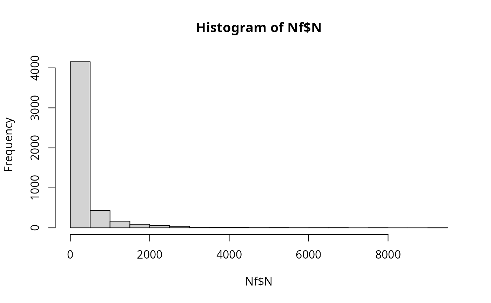

Cross-contamination during freezing/packaging and partitioning into packed units
Source:R/fvPartitioningCC.R
fvPartitioningCC.RdThe fvPartitioningCC() function simulates the potential re-contamination of vegetables post-blanching, when in direct
contact with contaminated surfaces of conveyors, freezer or packaging machine, followed by the partitioning of the bulk
of frozen vegetables into packed units.
The cross-contamination algorithm accounts for four possible scenarios:
cross-contamination occurring in lots already contaminated;
re-contamination occurring in lots that were not contaminated;
no cross-contamination occurring in lots already contaminated; and
no cross-contamination occurring in lots that were not contaminated.
Probabilities of occurrence of every event are computed. The partitioning algorithm randomly distributes the total numbers of cells from a
contaminated lot into packed units. The dispersion factor b, which is a parameter of the beta distribution, indicates the
extent of cell clustering in the bulk of frozen vegetables in a lot, and ultimately the heterogeneity in the number of cells
distributed among pack units.
Usage
fvPartitioningCC(
data = list(),
nLots = NULL,
sizeLot = NULL,
probCC,
trMean = -0.44,
trSd = 0.4,
nEquip,
bCCFV
)Arguments
- data
a list of:
N(
CFU) A matrix of sizenLotslots bysizeLotunits containing the numbers of L. monocytogenes in blanched units or portions from contaminated lots;PMean prevalence of contaminated lots (scalar);
ProbUnitPosProbability of individual lots being contaminated (vector).
- nLots
Number of lots sampled or size of the Monte Carlo simulation (scalar).
- sizeLot
Number of units or portions produced in a lot (scalar).
- probCC
Probability of cross-contamination of vegetables from conveyors, freezer or packaging machine (scalar).
- trMean
Mean parameter of the normal distribution representing the variability in the log 10 of the transfer coefficient of L. monocytogenes cells from surfaces to (frozen) vegetables (scalar or vector).
- trSd
Standard deviation parameter of the normal distribution representing the variability in the log 10 of the transfer coefficient of L. monocytogenes from surfaces to (frozen) vegetables (scalar or vector).
- nEquip
(
CFU) Numbers of L. monocytogenes cells on the surface of conveyors, freezer or packaging machine in contact with the (frozen) vegetables (scalar or vector).- bCCFV
Dispersion factor of the beta distribution representing the degree of heterogeneity in the number of cells between pack units (scalar).
Value
A list of three elements:
N(
CFU) A matrix of sizenLotslots bysizeLotunits representing the numbers of L. monocytogenes per pack unit, from contaminated lots;ProbUnitPosProbability of individual lots being contaminated after packaging (a lot is considered contaminated if at least one pack unit is contaminated) (vector);
PMean prevalence of contaminated lots after packaging (scalar).
Note
The value of \(probCC=0.125\) is taken from Truchado2021;textualqraLm, who analysed the presence of L. monocytogenes on conveyor belts, freezing tunnels and packaging machines in frozen food processing plants. The value of beta=1 represents moderate clustering of cells in the bulk of frozen vegetables from a lot Nauta2005;textualqraLm. Hoelzer2012;textualqraLm established the log 10 of the transfer coefficient of L. monocytogenes from stainless steel to vegetables as a normal distribution with \(TR\_mean=-0.44\) and \(TR\_sd=0.40\).
References
Truchado2021qraLm Hoelzer2012qraLm Nauta2005qraLm extraDistrqraLm mc2dqraLm RdpackqraLm statsqraLm iRisk2021qraLm
Author
Ursula Gonzales-Barron ubarron@ipb.pt and Regis Pouillot rpouillot.work@gmail.com
Examples
dat <- Lot2LotGen(
nLots = 50,
sizeLot = 100,
unitSize = 500,
betaAlpha = 0.5112,
betaBeta = 9.959,
C0MeanLog = 1.023,
C0SdLog = 0.3267,
propVarInter = 0.7
)
Nf <- fvPartitioningCC(dat,
probCC = 0.125, trMean = -0.44,
trSd = 0.40, nEquip = 500, bCCFV = 1
)
hist(Nf$N) # displays histogram of cells in a pack from contaminated lots
